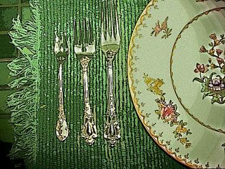

Rose Kelleher
To my husband, poetry,
apparently, does not have callused hands.
It went to college, has a smart C. V.,
and knows the reason for the leftmost fork.
It doesn’t wear a uniform to work.
Still, he endures this reading for my sake
unmoved, unnoticed as a wall. At home
where nouns defer to what they name, he’d pluck
a pencil from behind his ear and mark
the meeting-points of bookshelf and support;
or putter in silence, putting up storm doors
I’d never have remembered to install.
He’s too concrete for words. A concrete wall
is constant, rough enough to face the sand.
Noise, weakness and worry break against it
like water on the Hull seawall in winter
when stilted houses shiver on dry land.

Scrape
Silly enough being forty and not having read the Aeneid;
sillier still, to get carried away at the orthopedist’s,
squished between fidgety, purse-obsessed women while overhead, Oprah
lectures the audience, goddess of talk, demanding attention.
Still, there’s no telling the throat not to strangle itself, or the gut to
stop contracting. Reason’s no match for the body — not when
Dido’s heart is bashing itself on the bars of your rib cage.
God, how embarrassing! Best you can do is to flee to the restroom,
knowing they’ll call you the moment you leave. You’ll miss your appointment
blubbering over a fictional character. What is your problem?
Happily married, too! But Aeneas, Aeneas is leaving,
turning his back on her, boarding his ship, setting sail, disappearing.
Neck pain forgotten now, all you can feel is the scrape of an old
blade on your breastbone.
Rose Kelleher lives in Maryland. Her poems have appeared in Anon, Atlanta Review, The Dark Horse and other publications. Her first book of poems, Bundle o’ Tinder, was selected by Richard Wilbur for the 2007 Anthony Hecht Poetry Prize, and will be published by Waywiser Press in Fall 2008.
|